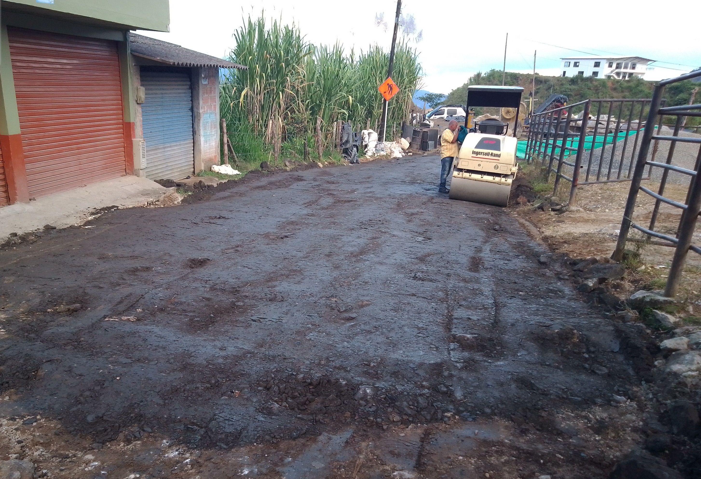
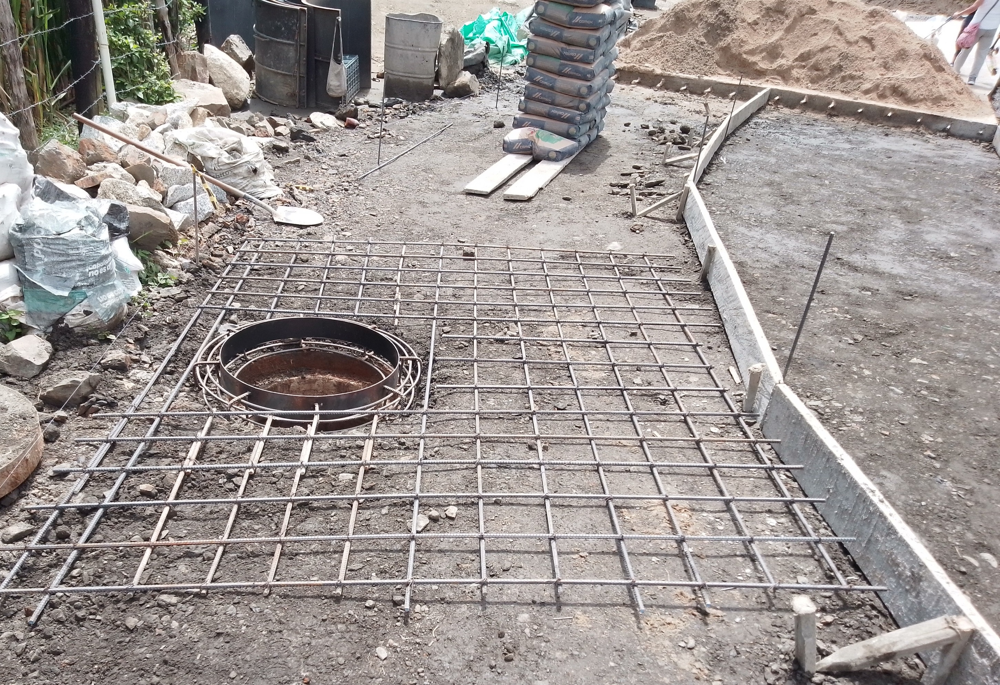
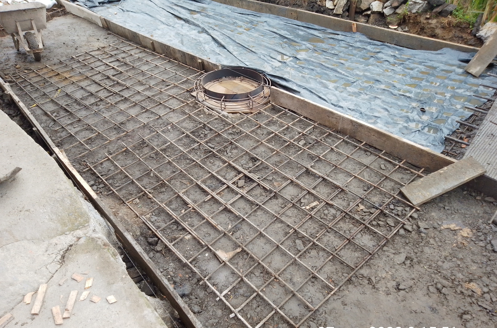
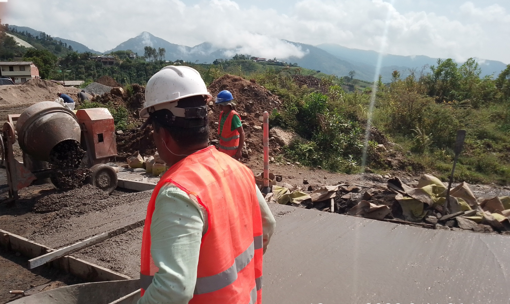
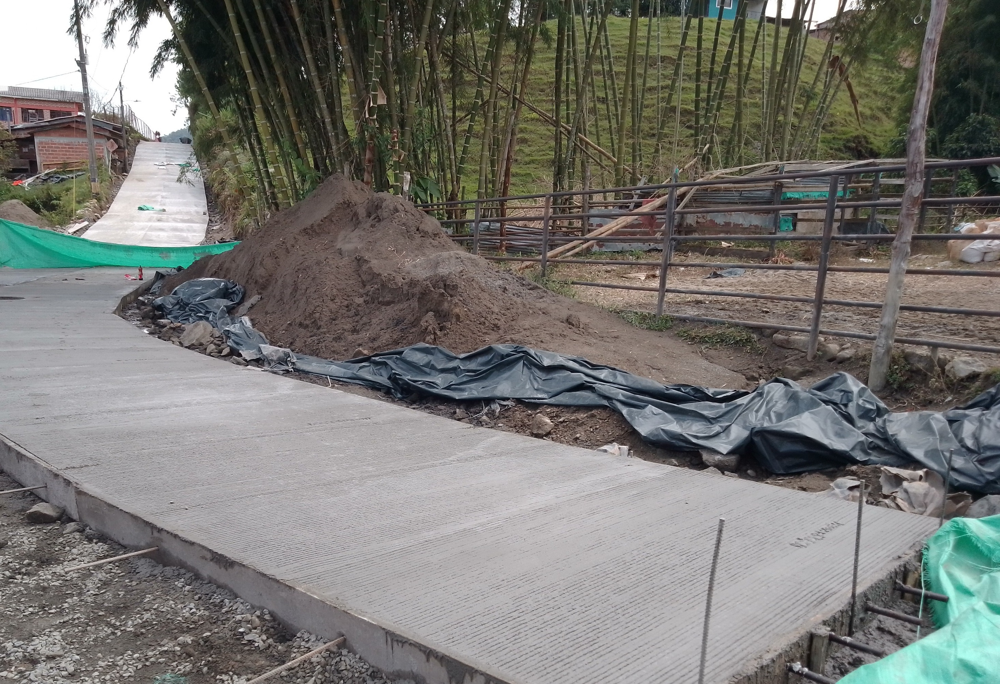

El proceso constructivo del pavimento rígido inicia con la nivelación topográfica, extensión y compactación mecánica de la capa de base granular, garantizando la densidad exigida por las especificaciones INVIAS y las pendientes transversales (bombeo) y longitudinales de drenaje urbano.

Previo a la fundición de las losas de rodadura, se realiza la adecuación de las redes hidrosanitarias y el figurado y armado del refuerzo estructural para los pozos de inspección (Manholes - MH), asegurando su integración monolítica y nivelación con la rasante proyectada.

Se instalan las formaletas metálicas alineadas por carril, disponiendo las canastillas con pasadores de carga (dovelas lisas engrasadas) en las juntas transversales de contracción y las barras de amarre corrugadas en las juntas longitudinales, además del refuerzo perimetral en las tapas de cámaras de inspección.

Vaciado continuo del concreto hidráulico por carriles alternos, aplicando vibrado de inmersión, enrasado con regla vibratoria, flotado (allanado), texturizado transversal antideslizante con cepillo y curado controlado antes de la modulación y corte de juntas.

Calzada urbana en pavimento rígido terminada (600 metros lineales en el casco urbano de Argelia, Antioquia), con juntas moduladas y selladas, brindando alta durabilidad estructural y confort al tránsito vehicular del municipio.